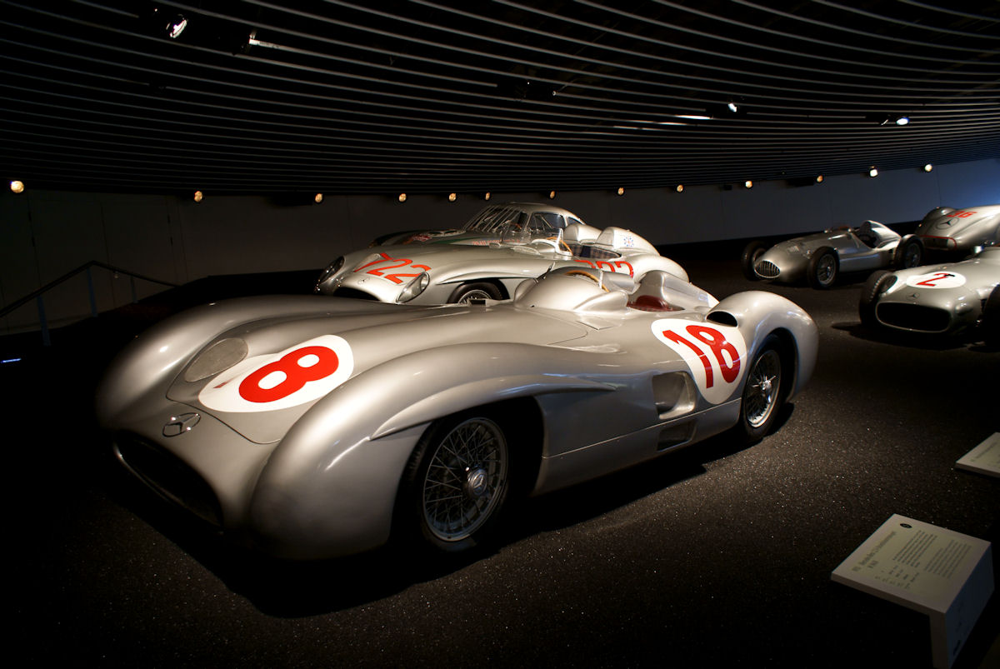

At each stop, open the car's page and watch one of its mechanisms working. Scroll to see where the mechanism sits under the bodywork. The route runs from Level 8 down, in the museum's own order.
Checking offline mode…